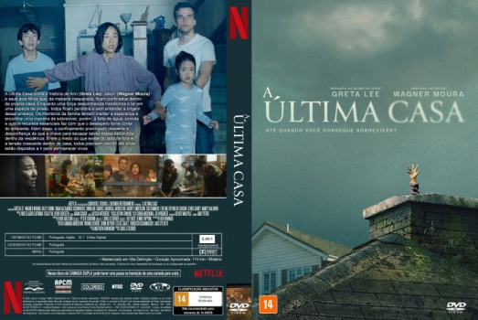

![link to A Última Casa [Autorado] on Rotten Tomatoes](../img/tomatoes.png)
![link to A Última Casa [Autorado] on TheMovieDb](../img/themoviedb.png)

Outro Título:The Last House
País:United States, 110 minutos
Idiomas falados:Inglês, Português
Gênero(s):Terror, Sci-Fi, Suspense
Diretor(s):Louis Leterrier
Escritor(es):Matthew Robinson
Codec:MPEG-2 (DVD)
Número: 5954


Certificado:14
Sinopse:
A Última Casa conta a história de Ann (Greta Lee), Jason (Wagner Moura) e seus dois filhos que, de maneira inesperada, ficam confinados dentro da própria casa. Enquanto uma força desconhecida transforma o lar em uma espécie de prisão, todos ficam perdidos e sem entender a origem dessa ameaça. Os membros da família tentam manter a esperança e encontrar uma maneira de sobreviver, porém, a falta de água, comida e outros recursos essenciais faz com que o desespero tome conta do ambiente. Além disso, o confinamento prolongado desperta a desconfiança de que a chave para escapar talvez esteja escondida dentro da residência. Entre o medo do que existe do lado de fora e a tensão crescente dentro de casa, todos precisam decidir até onde estão dispostos a ir para permanecer vivos.
Elenco:

Tipo de mídia: DVD5,
Legendas: Português, Sem Legendas
Alugado: Não
Tela: Anamorphic Widescreen